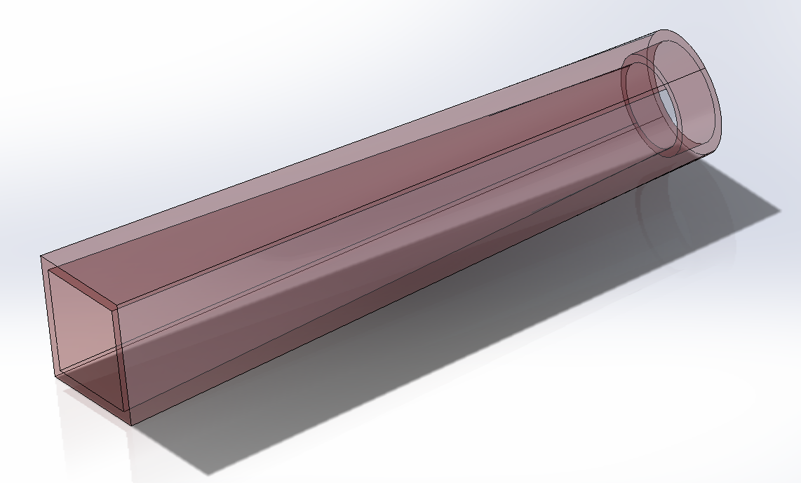
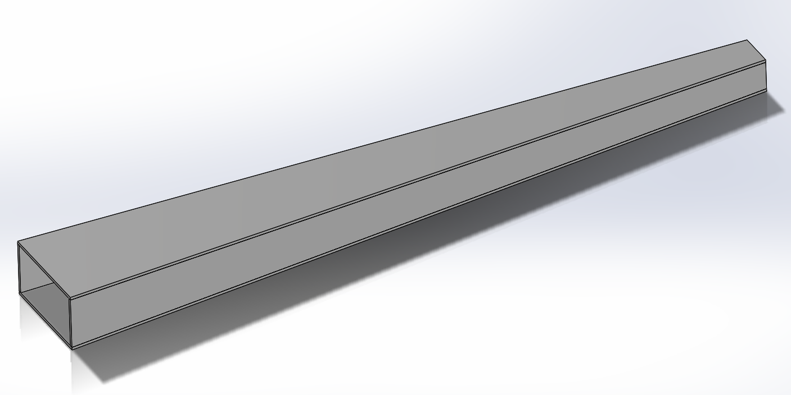

Gust generator design
An experimental apparatus design to generate a tranverse gust in a water-tow tank facility
Introduction
unsteady gusty conditions lead to flight instability and structural problems. Thus, mitigation of unsteady wing-gust encounters is one of the main current areas of research in the field of aerodynamics. The simulation of a gust is necessary to experimentally investigate unsteady wing-gust encounter. In this project, I designed and built a gust generator for the UMD water-tow tank facility. The gust generator is analogous to an open-test section water tunnel. Water flow is driven using a centrifugal pump and is guided to the gust outlet. The water exiting the outlet forms the gust region the wing encounters as it is being towed.
Design

The water exits the pump's discharge side and is guided to the diffuser section by PVC piping. The diffuser sections expand the flow gradually to avoid the onset of flow separation and the formation of recirculation zones. The fours diffusers merge into the mixing chamber that creates some travel distance for the flow to undergo before further treatment. This gives enough time for the flows to merge. The flow then turns 90 degrees via the aid of turning vanes into the gust outlet. The flow passes through a section of 1/8" honeycomb flow straightener on its way out of the system to remove flow tilt as well as break down large turbulent structures.
The Diffuser-pipe adapter is a section that provides the flow a smooth transition from a circular pipe cross-section to a rectangular diffuser cross-section.
The